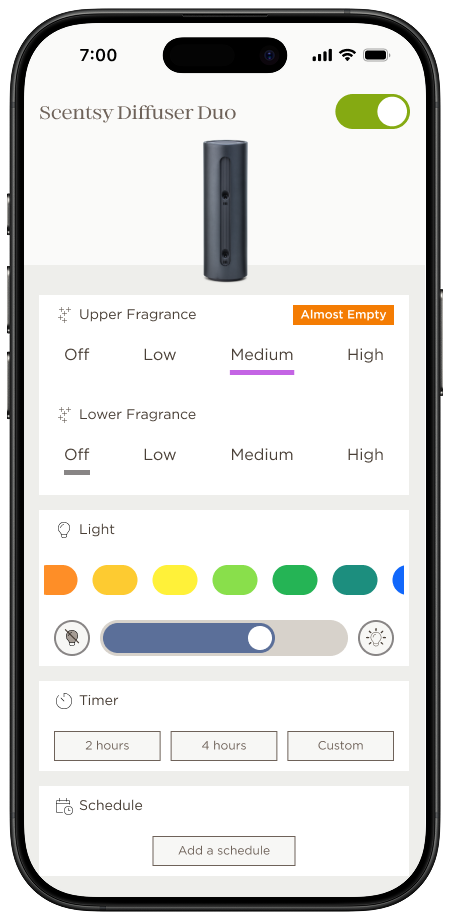
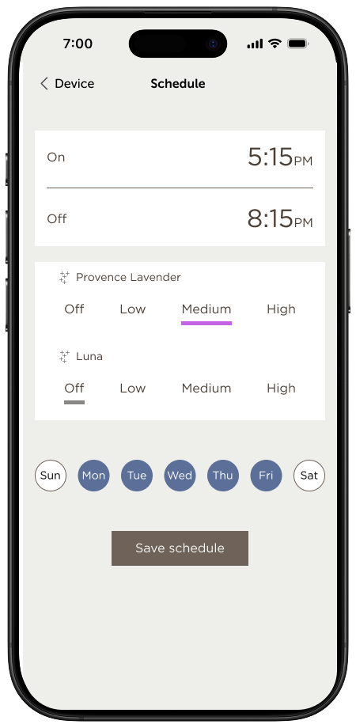

Designing a connected-fragrance ecosystem from zero to one, under NDA, to ship alongside new hardware and grow into a full product platform.
Scentsy was entering a new product category. The Scentsy Home App had to ship on the same day as the first connected device, but most of the team couldn't know what the device looked like, how it worked, or even what to call it in the hallway.
That constraint shaped everything. Every research session ran with a black-box prototype. Every review meeting had three people in the room and a printed NDA on the table. Every design artifact was stored on an isolated workspace and was not allowed to leave it. And every decision about pairing, onboarding, and control had to hold up whether the final hardware looked like what we'd prototyped or something meaningfully different.
This case study covers what can be discussed publicly. Pre-launch research specifics, hardware details, and internal artifacts remain confidential. The post-launch platform work is described at full depth.
I assembled a hand-selected panel of seven participants under strict NDA. They were chosen for a mix of device familiarity, Scentsy loyalty, and willingness to sit through long unstructured sessions with something on the table they couldn't photograph. Each participant went through three rounds, staggered across the product's development.
I wrote the discussion guides to probe the most discoverable moments of the experience: pairing, onboarding, first use, without revealing the device category. Sessions were run in a controlled environment, prototypes were handled only by the facilitator, and every recording was reviewed internally and then locked away.
Three decisions came directly out of that work. A one-tap pairing handshake that replaced the SSID-picker pattern common in other smart-device apps. A first-fragrance ceremony that oriented new users to the device category itself, not just the app. And a single-screen control surface that stayed legible at a glance from across a room.

The control screen carries one job: make the device's current state and its main control obvious without requiring focus. Color and weight surface the active scent, light, and device status clearly, and the scent-and-light pairing sits as the primary interactive target.
Everything else lives behind a disclosure or a longer press. Hierarchy was the product.
After launch, scope widened. I led the UX for four significant additions: over-the-air firmware updates, in-app fragrance reordering, device scheduling, and per-device scent and light settings.
The governing principle: if a new user couldn't discover a feature in their first session, it had to earn its place in the UI or live a tap deeper. Nothing made the home screen by default.

OTA updates needed a new mental model. Users expect devices to "just work," not to get better over time. I designed the update experience as a quiet, celebratory moment rather than a progress-bar interruption, with plain-language context for what was changing and why it mattered.
In-app reordering had to feel like a continuation of fragrance discovery, not a sales surface pasted onto a utility. I worked with merchandising and marketing to collapse the reorder flow into three taps from the active device, anchored on the currently playing fragrance.
Scheduling and per-device settings were built on a shared foundation so that adding the next connected product, which was already in the pipeline, wouldn't require re-designing either flow. That paid off when the second device shipped.
Two things, honestly. First, we shipped with a minimum-viable onboarding that worked but didn't teach. In hindsight I'd have held an extra two-week sprint to build progressive disclosure into the first session. The cost of users not fully understanding the scent-and-light pairing compounded across the first ninety days, and onboarding is the only cheap place to pay that cost.
Second, I'd have pushed harder for a small, always-on visual signal of device state on the home screen. It was cut for scope, and its absence forced users to open the app more often than they needed to, which hurt the "it just works" feeling we'd been trying to design in from the start.
The lesson from both is the same. When something is cut for scope in a zero-to-one product, check whether it's load-bearing for a property you're otherwise spending a lot of design energy to protect. If it is, the cut isn't saving time, it's deferring a debt.
If you're looking for a senior UX leader who runs on data, ships with conviction, and doesn't confuse activity with impact. Let's talk.
iamgaryengel@gmail.com →